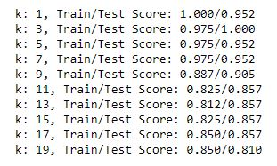
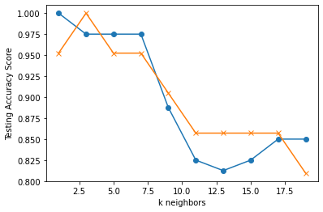
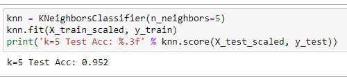

K Nearest Neighbor
"The value of a data point is determined by the data points around it."
Introduction
• When setting up the test data, default separation was used meaning that 75% of the original data was used in the train set and 25% was in the test set.
• The kNN classifier object was tested in a for loop, testing odd numbers up until 20
Selecting a k Value
The for loop resulted in the following accuracy scores:


- The most viable options seemed like between 2.5 - 7.5 and then after 17.5
- I decided to go with a k value of 5 because it had stability, had a good accuracy score, and gave the data options without being overwhelming
- Compared to examples I had seen, it was interesting that the test scores were so varied. This indicates that the data might not be easily predictable.
- A k value of 5 resulted in 97.5%accuracy for the training set and 95.2% accuracy for the testing set

Limitations:
• For this KNN demonstration I tried extensively to create scatter plot matrixes using both Seaborn and with Pandas Plotting. After creating both matrixes, it didn't seem beneficial to our dataset considering we had 7 different classifications.
• When displayed, both matrixes seemed very cluttered and didn't provide any additional knowledge or insight. For a different dataset this would have been very helpful to see visually where the KNNs lied.
• Our data also didn't have as many properties. Many data sets would group neighbors near eachother on blob or scatter plots, however our dataset had boolean logic to determine whether a given animal had a certain feature.